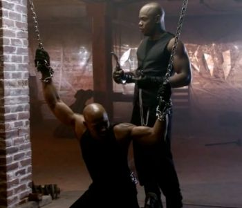
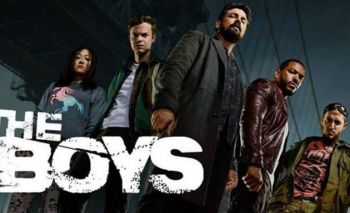
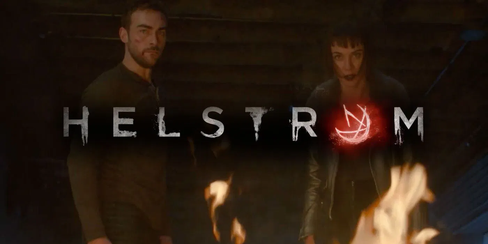
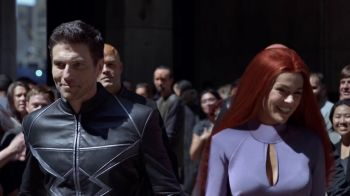
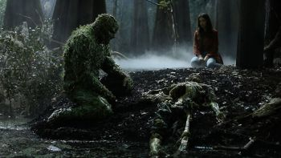

A film series is more than one film, each depicting parts of a larger story. Sometimes the work is conceived from the beginning as a multiple-film work, for example the Three Colours series, but in most cases the success of the original film inspires further films to be made. Individual sequels are relatively common, but are not always successful enough to spawn further installments.
The Marvel Cinematic Universe is the most highest grossing film series in unadjusted US Dollar figures surpassing the Harry Potter, Star Wars and James Bond series. However Peter Jackson's The Lord of the Rings has the highest average box office intake.
Фильмы о супергероях — жанр кино, посвящённый приключениям супергероев, то есть героев, которые обладают сверхчеловеческими силами (или заменяющей их техникой) и используют их для борьбы со злом. Большинство фильмов о супергероях создано по мотивам супергеройских комиксов.
Фильмы о супергероях почти всегда также относятся к жанрам боевика и кинофантастики. Действие, как правило, происходит в условно современном мире, в котором способности супергероя уникальны и отличают его от простых людей. Первый фильм в серии о супергерое часто рассказывает его историю становления, показывает, как у него появились суперспособности, и первую битву с главным суперзлодеем.
Из всего перечисленного существуют исключения. Так, например, есть фильмы о супергероях, не основанные на комиксах («Хэнкок», «Робокоп», «Суперсемейка» и др.) и нефантастические фильмы о супергероях («Пипец»).
Супергеройские фильмы снимаются, в основном в США, с конца 1930-х. Поначалу они были рассчитаны на детей и подростков, но со временем становились всё более взрослыми и серьёзными. С 2000-х Голливуд переживает бум супергеройского кино, в этом жанре выходит по нескольку фильмов каждый год. Крупнейшие кинопроекты в супергеройском жанре — киновселенная Marvel, киносерии «Люди Икс», «Человек-паук», фильмы о Бэтмене и о Супермене.

«Блэйд: Сериал» (англ. Blade: The Series) — американский супергеройский телесериал, основанный на комиксах издательства Marvel Comics и относящийся к той же вымышленной вселенной, что и фильмы о персонаже. Премьера состоялась на канале Spike TV 28 июня 2006. Вместо Уэсли Снайпса главного героя играл рэпер Кирк «Sticky Fingaz» Джонс. Вместе с ним также играли Джилл Вагнер в роли Кристы Старр, Нил Джексон в роли главного злодея-вампира Маркуса ван Скайвера, Джессика Гоуэр в роли его помощницы Чейз, и Нелсон Ли в роли Шена — азиатского помощника Блэйда. В России сериал шёл по телеканалу «НТВ», но не вызвал большой популярности, так как шёл в пять утра, а также на канале ТВ3.

«Пацаны» (англ. The Boys) — американский супергеройский сериал, созданный Эриком Крипке на основе одноимённого комикса Гарта Энниса и Дарика Робертсона, в разное время издававшегося DC Comics и Dynamite Entertainment. Премьера шоу состоялась 26 июля 2019 года на Amazon Prime Video. Ещё до премьеры сериал был продлён на второй сезон.

«Хелстром» (англ. Helstrom) — американский супергеройский сериал, созданный Полом Збышевски для Hulu на основе персонажей Дэймона и Сатаны Хеллстромов с комиксов издательства Marvel . Рассказывает самостоятельную историю в рамках киновселенной Marvel . Проект разработан ABC Signature и Marvel Television со Збышевски в роли шоуранера.
Том Остин и Сидни Леммон сыграют Дэймона и Ану Хелстромов соответственно, детей мощного серийного убийцы, истребляющего худших представителей человечества. Элизабет Марвел, Роберт Уиздом, Джун Керрил, Арианна Герри и Ален Юай также присутствуют в актерском составе сериала. О заказе «Хелстрому» на Hulu было объявлено в мае 2019 и он запланирован как начало франшизы «Путешествие в страх» от Marvel Television. Съемки проходили в Ванкувере с октября 2019 по март 2020 года. Надзор за сериалом перешёл к Marvel Studios в декабре 2019 года, когда телекомпания была присоедена к этой студии.

«Сверхлюди» (оригинальное название — «Нелюди», англ. Inhumans) — американский супергеройский телесериал о королевской семье расы Нелюдей, премьера которого состоялась 29 сентября 2017 года на телеканале ABC. В разработке сериала принимали участие Marvel Television и ABC при содействии IMAX Corporation. Производство шоу стартовало 3 марта и прошло на территории Чикаго, Лос-Анджелеса, Калифорнии и на Гавайских островах.
11 мая 2018 года сериал был закрыт после одного сезона.
«Железный кулак» (англ. Iron Fist или Marvel’s Iron Fist) — американский телесериал, созданный Скоттом Баком и основанный на одноимённом персонаже комиксов Marvel. Производством занимаются студии Marvel Television и ABC Studios, а показ осуществляется через потоковый видеосервис Netflix. «Железный Кулак» входит в кинематографическую вселенную Marvel и является четвёртым из серии сериалов (первый — «Сорвиголова», второй — «Джессика Джонс», третий «Люк Кейдж»), которые объединятся в кроссоверный мини-сериал «Защитники». Шоураннером первого сезона был Скотт Бак, второго — Рэйвен Метцнер. Все 13 серий первого сезона выложены на Netflix 17 марта 2017 года. В июле было объявлено о продлении телесериала на второй сезон, все 10 серий которого вышли 7 сентября 2018 года. Netflix закрыл сериал 12 октября 2018 года.
«Локи» (англ. Loki) — американский мини-сериал, созданный Майклом Уолдроном для стримингового сервиса Disney+ и основанный на одноимённом персонаже из Marvel Comics. Его действие происходит в Кинематографической вселенной Marvel (КВМ) и он напрямую связан с фильмами франшизы. События сериала разворачиваются после фильма «Мстители: Финал» (2019), где альтернативная версия Локи создала новую временную линию. Производством «Локи» занималась Marvel Studios. Главным сценаристом сериала выступил Майкл Уолдрон, а режиссёром первого сезона стала Кейт Херрон.
Том Хиддлстон вновь исполняет роль Локи из серии фильмов. Также одну из главных ролей исполняет Оуэн Уилсон. К сентябрю 2018 года Marvel Studios разрабатывала несколько мини-сериалов для Disney+, сосредоточенных на второстепенных персонажах из фильмов КВМ, среди которых был сериал про Локи. Этот мини-сериал был подтверждён в ноябре 2019 года, так же как и участие Хиддлстона. В феврале 2019 года был нанят Уолдрон, а Херрон присоединилась в августе этого же года. Съёмки начались в январе 2020 года в Атланте, Джорджия, но были приостановлены в марте 2020 года из-за пандемии COVID-19. Производство возобновилось в сентябре 2020 года.
Премьера «Локи» состоялась 9 июня 2021 года, и первый сезон будет состоять из шести эпизодов. Он будет частью Четвёртой фазы КВМ. Второй сезон находится в разработке.

«Болотная тварь» (англ. Swamp Thing) — американский супергеройский хоррор веб-сериал, основанный на комиксе DC об Алеке Холланде, который в результате несчастного случая на болоте погибает, но превращается в Болотную тварь. Премьера сериала в США состоялась 31 мая 2019 года на стриминговом сервисе DC Universe. В России сериал вышел 1 июня 2019 года на интернет-сервисе КиноПоиск. Сериал был закрыт через неделю после премьеры из-за финансовых проблем.
«Монашка-воительница» (англ. Warrior Nun) — американский фантастический телесериал от стримингового сервиса Netflix, основанного на одноименной серии комиксов художника и писателя Бена Данна.
Премьера сериала состоялась на Netflix 2 июля 2020 года. 21 августа 2020 года сериал был продлён на 2 сезон.